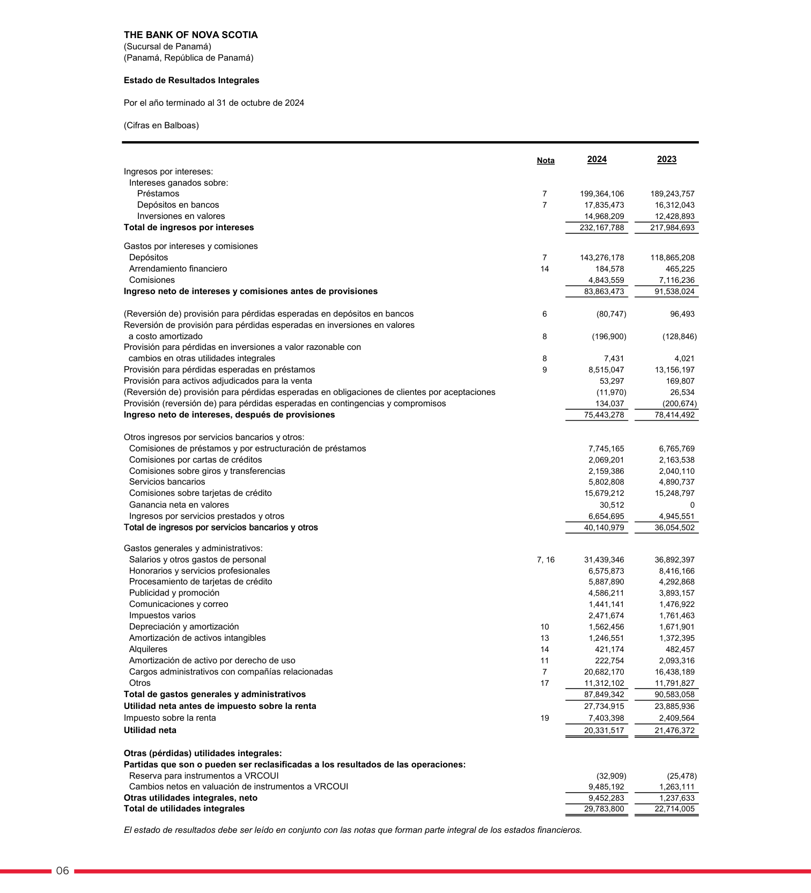
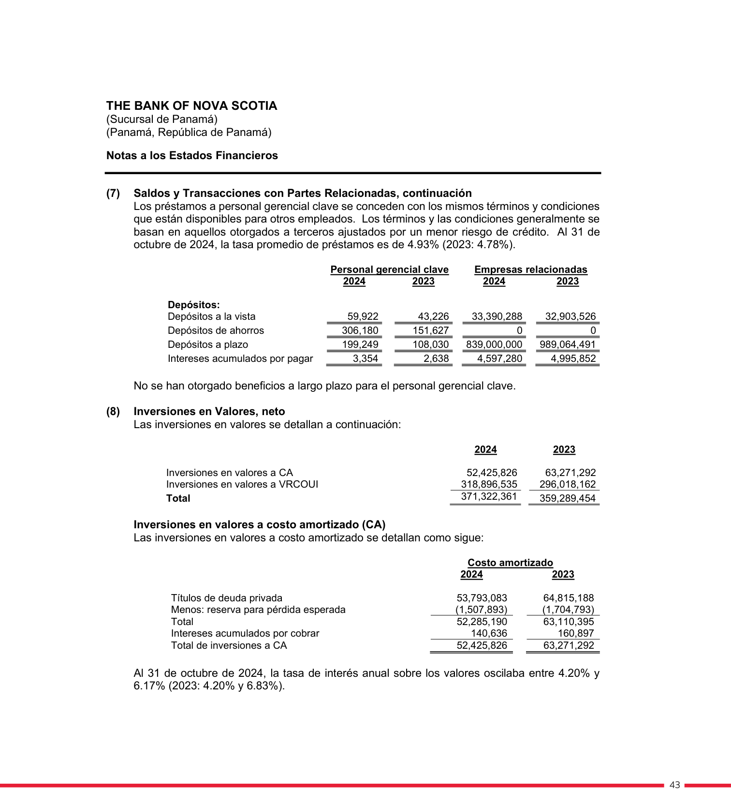
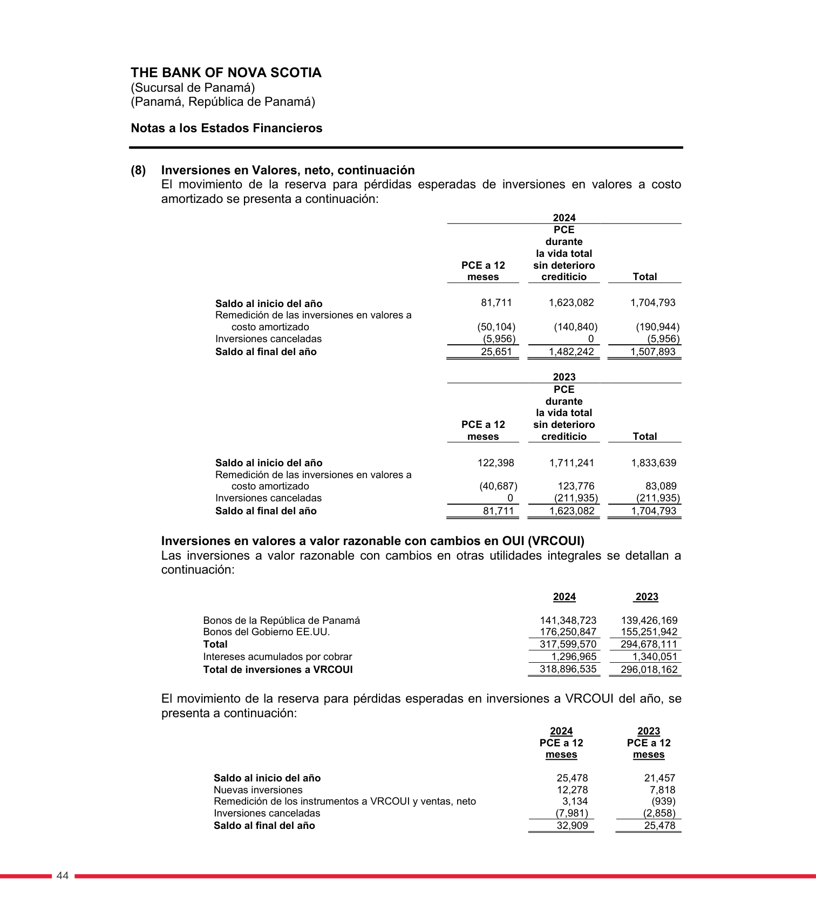
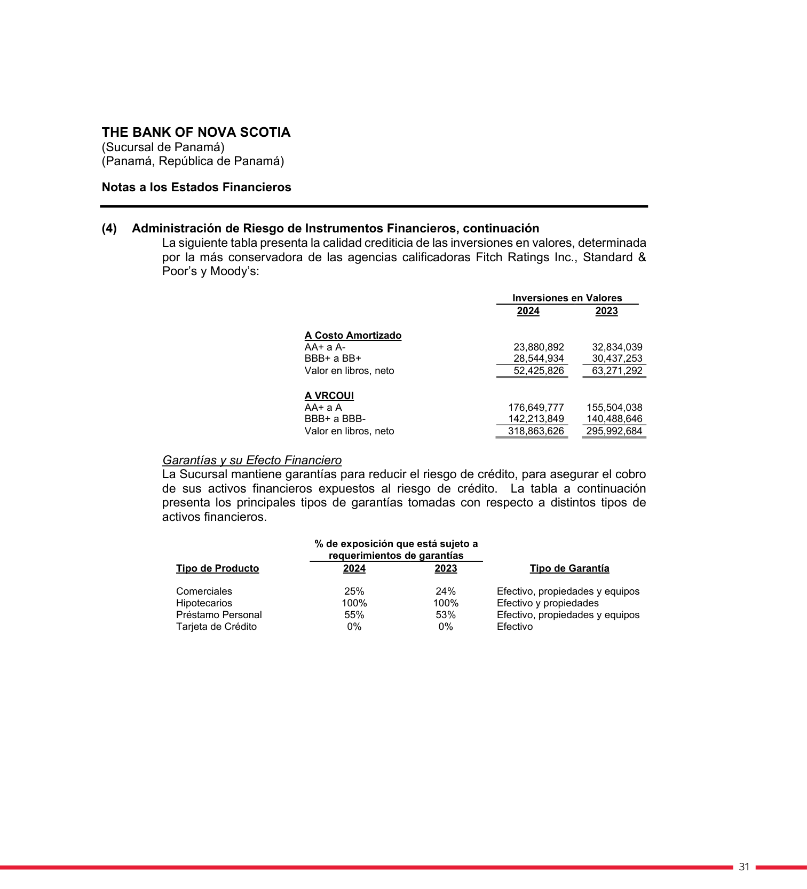

<title>Scotiabank — Renglones con ganancias del portafolio de inversiones</title>
<meta name="viewport" content="width=device-width, initial-scale=1">
<style>
<style>
:root{
  --plane:#eef1f5; --surface:#f8f9fb; --surface-2:#ffffff;
  --ink:#0f1620; --ink-2:#475062; --muted:#8a91a0; --hair:#dde2ea; --hair-2:#c7cedb;
  --accent:#2a78d6; --accent-soft:#e7f0fc;
  --s1:#2a78d6; --s2:#1baf7a; --s3:#c98a00; --s6:#e34948;
  --good:#0a8a3a; --warn:#b8770a; --crit:#c0392b;
  --good-bg:#e4f4ea; --warn-bg:#fbf1dc; --crit-bg:#fae5e2; --info-bg:#e7f0fc;
  --shadow:0 1px 2px rgba(15,22,32,.04),0 8px 24px rgba(15,22,32,.06);
  --mono:ui-monospace,"SF Mono","SFMono-Regular",Menlo,Consolas,monospace;
  --sans:system-ui,-apple-system,"Segoe UI",Roboto,sans-serif;
}
@media (prefers-color-scheme:dark){
  :root{
    --plane:#0a0c10; --surface:#12161d; --surface-2:#171c25;
    --ink:#f2f5fa; --ink-2:#a8b0c0; --muted:#6b7382; --hair:#242a34; --hair-2:#2f3744;
    --accent:#4a90e2; --accent-soft:#16273c;
    --s1:#3987e5; --s2:#199e70; --s3:#c98500; --s6:#e66767;
    --good:#3bbf6a; --warn:#e0a52c; --crit:#e8756a;
    --good-bg:#12291b; --warn-bg:#2a2210; --crit-bg:#2c1815; --info-bg:#16273c;
    --shadow:0 1px 2px rgba(0,0,0,.3),0 10px 30px rgba(0,0,0,.4);
  }
}
:root[data-theme="dark"]{
  --plane:#0a0c10; --surface:#12161d; --surface-2:#171c25;
  --ink:#f2f5fa; --ink-2:#a8b0c0; --muted:#6b7382; --hair:#242a34; --hair-2:#2f3744;
  --accent:#4a90e2; --accent-soft:#16273c;
  --s1:#3987e5; --s2:#199e70; --s3:#c98500; --s6:#e66767;
  --good:#3bbf6a; --warn:#e0a52c; --crit:#e8756a;
  --good-bg:#12291b; --warn-bg:#2a2210; --crit-bg:#2c1815; --info-bg:#16273c;
}
:root[data-theme="light"]{
  --plane:#eef1f5; --surface:#f8f9fb; --surface-2:#ffffff;
  --ink:#0f1620; --ink-2:#475062; --muted:#8a91a0; --hair:#dde2ea; --hair-2:#c7cedb;
  --accent:#2a78d6; --accent-soft:#e7f0fc;
  --s1:#2a78d6; --s2:#1baf7a; --s3:#c98a00; --s6:#e34948;
  --good:#0a8a3a; --warn:#b8770a; --crit:#c0392b;
  --good-bg:#e4f4ea; --warn-bg:#fbf1dc; --crit-bg:#fae5e2; --info-bg:#e7f0fc;
}
*{box-sizing:border-box}
html{scroll-behavior:smooth}
body{margin:0;background:var(--plane);color:var(--ink);font-family:var(--sans);
  font-size:16px;line-height:1.58;-webkit-font-smoothing:antialiased}
.wrap{max-width:1000px;margin:0 auto;padding:0 24px}
h1,h2,h3{text-wrap:balance;line-height:1.18;margin:0}
.mono{font-family:var(--mono)}
a{color:var(--accent)}

header.top{position:sticky;top:0;z-index:40;background:color-mix(in srgb,var(--plane) 90%,transparent);
  backdrop-filter:blur(10px);border-bottom:1px solid var(--hair)}
.top-in{display:flex;align-items:center;gap:14px;height:56px;max-width:1000px;margin:0 auto;padding:0 24px}
.brandmark{display:flex;align-items:center;gap:10px;font-weight:680;letter-spacing:-.01em;font-size:15px}
.brandmark .dot{width:9px;height:9px;border-radius:50%;background:var(--accent);box-shadow:0 0 0 4px var(--accent-soft)}
.top-spacer{flex:1}
.top-in a{font-size:13px;color:var(--ink-2);text-decoration:none}
.top-in a:hover{color:var(--accent)}

.hero{padding:44px 0 26px;border-bottom:1px solid var(--hair)}
.eyebrow{font-family:var(--mono);font-size:12px;letter-spacing:.08em;text-transform:uppercase;color:var(--accent);font-weight:600}
h1{font-size:33px;font-weight:720;letter-spacing:-.02em;margin:12px 0 10px}
.lede{font-size:17px;color:var(--ink-2);max-width:74ch}
.meta-row{display:flex;flex-wrap:wrap;gap:8px;margin-top:18px}
.pill{font-size:12.5px;background:var(--surface-2);border:1px solid var(--hair);border-radius:999px;padding:4px 12px;color:var(--ink-2)}
.pill b{color:var(--ink)}

section{padding:34px 0;border-bottom:1px solid var(--hair)}
.sec-head{display:flex;align-items:baseline;gap:12px;margin-bottom:14px}
.sec-num{font-family:var(--mono);font-size:12px;color:var(--muted);font-weight:600}
h2{font-size:23px;font-weight:680;letter-spacing:-.01em}
h3{font-size:15.5px;font-weight:640;margin:20px 0 7px}
p{margin:0 0 12px}
.sub{color:var(--ink-2)}

.tbl-scroll{overflow-x:auto;margin:14px 0;border:1px solid var(--hair);border-radius:12px}
table{border-collapse:collapse;width:100%;font-size:14px;background:var(--surface-2);min-width:640px}
th,td{text-align:left;padding:9px 13px;border-bottom:1px solid var(--hair);vertical-align:top}
thead th{background:var(--surface);font-weight:640;font-size:12px;color:var(--ink-2);
  text-transform:uppercase;letter-spacing:.03em}
tbody tr:last-child td{border-bottom:none}
.num{text-align:right;font-variant-numeric:tabular-nums;font-family:var(--mono);font-size:13px;white-space:nowrap}
.tot td{font-weight:700;background:color-mix(in srgb,var(--accent-soft) 55%,transparent)}
.sub-row td{background:color-mix(in srgb,var(--surface) 60%,transparent);font-size:13px}
.sub-row td:first-child{padding-left:26px;color:var(--ink-2)}
.neg{color:var(--crit)}
.mini{font-size:12px;color:var(--muted)}

.badge{display:inline-block;font-size:11px;font-weight:640;padding:1px 8px;border-radius:6px;font-family:var(--mono);letter-spacing:.02em;white-space:nowrap}
.b-pl{background:var(--accent-soft);color:var(--accent)}
.b-oci{background:var(--warn-bg);color:var(--warn)}
.b-prov{background:var(--crit-bg);color:var(--crit)}
.b-yes{background:var(--good-bg);color:var(--good)}
.b-no{background:var(--crit-bg);color:var(--crit)}

.callout{display:flex;gap:13px;padding:15px 17px;border-radius:12px;margin:16px 0;font-size:14.5px;line-height:1.5}
.callout .ic{flex:0 0 24px;width:24px;height:24px;border-radius:50%;display:grid;place-items:center;font-weight:700;font-size:14px;color:#fff}
.co-key{background:var(--crit-bg)} .co-key .ic{background:var(--crit)}
.co-info{background:var(--info-bg)} .co-info .ic{background:var(--accent)}
.co-good{background:var(--good-bg)} .co-good .ic{background:var(--good)}

.map{display:grid;grid-template-columns:repeat(auto-fit,minmax(220px,1fr));gap:14px;margin:18px 0}
.mapc{background:var(--surface-2);border:1px solid var(--hair);border-radius:14px;padding:15px 17px;box-shadow:var(--shadow)}
.mapc .t{font-size:12px;color:var(--muted);text-transform:uppercase;letter-spacing:.04em;font-weight:600;margin-bottom:8px}
.mapc ul{margin:0;padding-left:16px;font-size:13.5px;color:var(--ink-2)}
.mapc li{margin:4px 0}
.mapc li b{color:var(--ink)}
.mapc .amt{font-family:var(--mono);font-size:12.5px}

.ev-grid{display:grid;grid-template-columns:repeat(auto-fill,minmax(170px,1fr));gap:12px;margin-top:12px}
.ev{display:block;background:var(--surface-2);border:1px solid var(--hair);border-radius:10px;overflow:hidden;text-decoration:none;color:inherit;box-shadow:var(--shadow)}
.ev img{width:100%;display:block;aspect-ratio:3/4;object-fit:cover;object-position:top;background:#fff;border-bottom:1px solid var(--hair)}
.ev .cap{padding:8px 10px;font-size:12px;color:var(--ink-2)}
.ev .cap b{display:block;color:var(--ink);font-size:12.5px;margin-bottom:1px}
.ev:hover{border-color:var(--accent)}

.kbd{font-family:var(--mono);font-size:12.5px;background:var(--surface);border:1px solid var(--hair-2);border-radius:5px;padding:1px 6px}
footer{padding:30px 0 60px;color:var(--muted);font-size:13px}
@media(max-width:640px){h1{font-size:26px}.hero{padding:32px 0 22px}}
</style>
</style>

<header class="top">
  <div class="top-in">
    <span class="brandmark"><span class="dot"></span>Scotiabank · Ganancias de inversiones</span>
    <span class="top-spacer"></span>
    <a href="index.html">← Radar de Inversiones</a>
  </div>
</header>

<main class="wrap">
  <div class="hero">
    <div class="eyebrow">Nota de trabajo · mapa de renglones</div>
    <h1>¿Dónde aparecen las ganancias del portafolio de inversiones?</h1>
    <p class="lede">Rastreo, renglón por renglón, del <b>último estado financiero standalone</b> de Scotiabank Panamá (FY2024, cierre 31-octubre-2024, auditado) antes de ser <b>absorbido por Davivienda</b> el 5-dic-2025. El rasgo distintivo: la sucursal corría un libro pequeño y muy tranquilo — el resultado de valores es <b>casi todo interés</b>, con una ganancia de venta minúscula (US$30 mil) y sin FVTPL.</p>
    <div class="meta-row">
      <span class="pill">Emisor: <b>Scotiabank (The Bank of Nova Scotia) — Sucursal de Panamá</b></span>
      <span class="pill">Corte: <b>31-oct-2024</b> (auditado · absorbido dic-2025)</span>
      <span class="pill">Período: <b>año fiscal completo (cierre octubre)</b></span>
      <span class="pill">Moneda: <b>USD</b> (B/. a la par)</span>
    </div>
  </div>
  <section id="mapa">
    <div class="sec-head"><span class="sec-num">TL;DR</span><h2>El mapa completo — libro pequeño, casi todo interés</h2></div>
    <p class="sub">En Scotiabank el resultado del portafolio es simple: <b>interés</b> (la parte grande), una <b>ganancia de venta minúscula</b> (30,512) sin nota ni desglose, el ORI (valuación VRCOUI) y dos provisiones de deterioro. Sin FVTPL, sin renglón mixto. Cifras del año fiscal completo a oct-2024.</p>
    <div class="map">
      <div class="mapc">
        <div class="t">① Estado de Resultados · interés</div>
        <ul>
          <li><b>Inversiones en valores</b> <span class="amt">14,968,209</span> — casi todo el resultado del portafolio</li>
        </ul>
      </div>
      <div class="mapc">
        <div class="t">② Estado de Resultados · venta</div>
        <ul>
          <li><b>Ganancia neta en valores</b> <span class="amt">30,512</span> — minúscula, sin nota ni desglose (2023: 0)</li>
        </ul>
      </div>
      <div class="mapc">
        <div class="t">③ Resultado Integral (ORI)</div>
        <ul>
          <li><b>Cambios netos en valuación de instrumentos a VRCOUI</b> <span class="amt">9,485,192</span> — no realizada</li>
          <li>Reserva para instrumentos a VRCOUI <span class="amt neg">(32,909)</span></li>
        </ul>
      </div>
      <div class="mapc">
        <div class="t">④ P&amp;L · deterioro (netea)</div>
        <ul>
          <li>Reversión CA <span class="amt neg">(196,900)</span> — ganancia</li>
          <li>Provisión VRCOUI <span class="amt">7,431</span> — cargo</li>
        </ul>
      </div>
    </div>
    <div class="callout co-good"><span class="ic">✓</span>
      <div><b>Nada que abrir.</b> El resultado del portafolio de Scotiabank es esencialmente <b>interés</b> (14.97 M) más una ganancia de venta de valores <b>minúscula</b> (30,512, sin nota de desglose porque no la necesita) y un neteo pequeño de deterioro. No hay línea mixta, no hay FVTPL, no hay divisas ni derivados en el resultado de valores. Es el libro más sencillo del perímetro — coherente con una sucursal en proceso de absorción.</div>
    </div>
  </section>
  <section>
    <div class="sec-head"><span class="sec-num">01</span><h2>Estado de Ganancias o Pérdidas (P&amp;L)</h2></div>
    <p class="sub">PDF p.9 (el estado combina P&amp;L y ORI). Un renglón grande de <b>interés</b> y uno minúsculo de <b>venta</b>. Cifras del año fiscal completo (comparativo oct-2023).</p>
    <div class="tbl-scroll"><table>
      <thead><tr><th>Renglón (P&amp;L)</th><th class="num">oct-2024</th><th class="num">oct-2023</th><th>Tipo</th><th>¿Solo portafolio?</th></tr></thead>
      <tbody>
        <tr><td><b>Ingresos por intereses — "Inversiones en valores"</b></td><td class="num">14,968,209</td><td class="num">12,428,893</td><td><span class="badge b-pl">Interés</span></td><td><span class="badge b-yes">Sí — cartera</span></td></tr>
        <tr><td><b>Ganancia neta en valores</b> <span class="mini">(sin nota)</span></td><td class="num">30,512</td><td class="num">0</td><td><span class="badge b-pl">Valuación/venta</span></td><td><span class="badge b-yes">Sí — venta</span></td></tr>
      </tbody>
    </table></div>
    <p class="mini">La ganancia de venta (30,512) no lleva referencia de nota ni desglose: es demasiado pequeña y pura para requerirlo. No hay clasificación FVTPL en Scotiabank — solo VRCOUI y costo amortizado.</p>
  </section>
  <section>
    <div class="sec-head"><span class="sec-num">02</span><h2>Estado de Resultado Integral (ORI / patrimonio)</h2></div>
    <p class="sub">PDF p.9 (mismo estado de resultados integrales). La valuación no realizada de la cartera VRCOUI. En FY2024 fue una ganancia grande (9.49 M), por la caída de tasas hacia el cierre del año fiscal.</p>
    <div class="tbl-scroll"><table>
      <thead><tr><th>Renglón (ORI)</th><th class="num">oct-2024</th><th class="num">oct-2023</th><th>Naturaleza</th></tr></thead>
      <tbody>
        <tr><td><b>Cambios netos en valuación de instrumentos a VRCOUI</b></td><td class="num">9,485,192</td><td class="num">1,263,111</td><td><span class="badge b-oci">No realizada · FVOCI deuda</span></td></tr>
        <tr><td>Reserva para instrumentos a VRCOUI</td><td class="num neg">(32,909)</td><td class="num neg">(25,478)</td><td><span class="badge b-oci">ECL en ORI</span></td></tr>
        <tr class="tot"><td>Otras utilidades integrales, neto</td><td class="num">9,452,283</td><td class="num">1,237,633</td><td></td></tr>
      </tbody>
    </table></div>
    <div class="callout co-info"><span class="ic">i</span>
      <div><b>Sin línea de reciclaje separada.</b> El estado de Scotiabank no divulga una transferencia/reciclaje al P&amp;L aparte — coherente con una ganancia de venta minúscula (30,512). La ganancia no realizada del año (9.49 M) es de lejos el mayor componente del resultado integral del portafolio.</div>
    </div>
  </section>
  <section>
    <div class="sec-head"><span class="sec-num">03</span><h2>P&amp;L — deterioro sobre la cartera (netea)</h2></div>
    <p class="sub">PDF p.9. Dos partidas de deterioro sobre valores (Nota 8): una reversión (ganancia) sobre el libro a costo amortizado y un cargo pequeño sobre el VRCOUI.</p>
    <div class="tbl-scroll"><table>
      <thead><tr><th>Renglón</th><th class="num">oct-2024</th><th class="num">oct-2023</th><th>Efecto</th></tr></thead>
      <tbody>
        <tr><td>Reversión de provisión — inversiones a costo amortizado <span class="mini">(Nota 8)</span></td><td class="num neg">(196,900)</td><td class="num neg">(128,846)</td><td class="mini">reversión (ganancia)</td></tr>
        <tr><td>Provisión — inversiones a VRCOUI <span class="mini">(Nota 8)</span></td><td class="num">7,431</td><td class="num">4,021</td><td class="mini">cargo</td></tr>
      </tbody>
    </table></div>
    <p class="mini">Neto: reversión de 189,469 a favor del resultado (la reserva a costo amortizado se liberó parcialmente).</p>
  </section>
  <section>
    <div class="sec-head"><span class="sec-num">04</span><h2>Resumen — resultado del portafolio en el período</h2></div>
    <p class="sub">Sumando los renglones del portafolio, el resultado del año fiscal a oct-2024:</p>
    <div class="tbl-scroll"><table>
      <thead><tr><th>Concepto (solo portafolio de inversiones)</th><th class="num">oct-2024</th><th>Dónde</th></tr></thead>
      <tbody>
        <tr><td>Interés devengado ("Inversiones en valores")</td><td class="num">14,968,209</td><td class="mini">P&amp;L · interés</td></tr>
        <tr><td>Ganancia en venta de valores</td><td class="num">30,512</td><td class="mini">P&amp;L</td></tr>
        <tr><td>(+) Reversión neta de deterioro (favorece el resultado)</td><td class="num">189,469</td><td class="mini">P&amp;L · Nota 8</td></tr>
        <tr class="tot"><td>= Resultado del portafolio en <b>utilidad neta</b></td><td class="num">15,188,190</td><td class="mini">P&amp;L</td></tr>
        <tr><td>(+) Cambio no realizado VRCOUI (a patrimonio)</td><td class="num">9,485,192</td><td class="mini">ORI</td></tr>
        <tr class="tot"><td>= Resultado <b>integral</b> del portafolio (P&amp;L + ORI)</td><td class="num">24,673,382</td><td class="mini">P&amp;L + ORI</td></tr>
      </tbody>
    </table></div>
    <p class="mini">Cifras del <b>año fiscal completo a oct-2024 auditado</b> — último cierre standalone antes de la absorción por Davivienda. El deterioro neto fue una reversión (suma al resultado). Sin FVTPL y sin reciclaje separado.</p>
  </section>
  <section>
    <div class="sec-head"><span class="sec-num">05</span><h2>Evidencia — páginas fuente</h2></div>
    <p class="sub">Capturas de las páginas exactas del 31-oct-2024. Clic para ampliar. Fuente PDF: <a href="https://pa.scotiabank.com/content/dam/scotiabank/international/panama/Espanol/pdf/Estados-Financieros-2024-Sucursal-de-Panama.pdf">EE.FF. Sucursal de Panamá FY2024 (auditado)</a>.</p>
    <div class="ev-grid">
      <a class="ev" href="capturas-fuentes/scotiabank-oct2024_p009_resultados-integrales.png"><div class="cap"><b>P&amp;L + ORI · p.9</b>Interés valores 15.0M · ganancia venta 30.5K · valuación VRCOUI 9.49M</div></a>
      <a class="ev" href="capturas-fuentes/scotiabank-oct2024_p046_nota8-composicion.png"><div class="cap"><b>Nota 8 · p.46</b>Composición VRCOUI / costo amortizado (371M)</div></a>
      <a class="ev" href="capturas-fuentes/scotiabank-oct2024_p047_nota8-vrcoui.png"><div class="cap"><b>Nota 8 · p.47</b>VRCOUI: Panamá 141M + Tesoros EEUU 176M</div></a>
      <a class="ev" href="capturas-fuentes/scotiabank-oct2024_p034_ratings-inversiones.png"><div class="cap"><b>Ratings · p.34</b>Calidad crediticia de la cartera (casi toda IG)</div></a>
    </div>
  </section>
  <section>
    <div class="sec-head"><span class="sec-num">06</span><h2>Conclusión</h2></div>
    <div class="callout co-good"><span class="ic">✓</span>
      <div><b>Renglones identificados — el libro más simple.</b> El resultado del portafolio de Scotiabank es <b>casi todo interés</b> (15.0 M), con una ganancia de venta minúscula (30.5 K, sin desglose porque no lo necesita), la valuación no realizada VRCOUI en el ORI (9.49 M) y un neteo pequeño de deterioro. Sin FVTPL, sin renglón mixto, sin reciclaje separado. Último cierre standalone (oct-2024) antes de ser absorbido por Davivienda. Verificado contra el EF FY2024.</div>
    </div>
    <p class="mini">Preparado para la mesa de tesorería · corte 31-oct-2024. Reporte completo en <a href="index.html">index.html</a> · dataset en <span class="kbd">datos-extraidos.md</span>.</p>
  </section>

</main>
<footer><div class="wrap">Radar de Inversiones — Banca de Panamá · Banistmo como banco base · datos 2024–2026.</div></footer>
<script>
(function(){ try{ var t=localStorage.getItem("theme"); if(t)document.documentElement.setAttribute("data-theme",t); }catch(e){} })();
</script>
